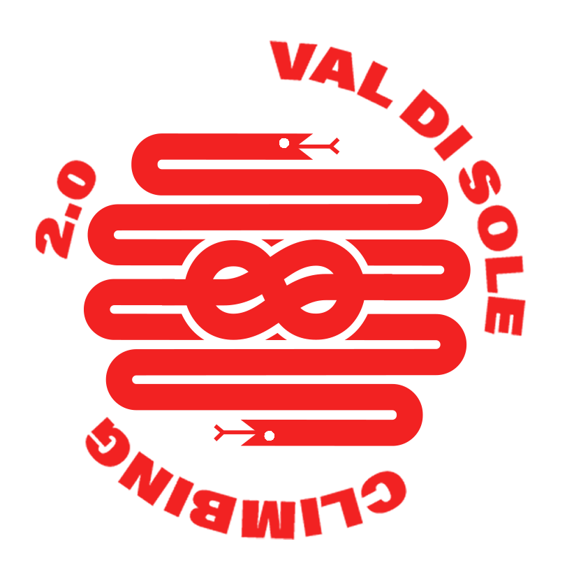

The new logo for the Climbing association “Val di Sole climbing 2.0” is created from the combination between a climbing rope and a snake. I was always been interested about the animal figures inside the historical sport logos. Usually the animal represents the pride, the bravery or other important team skills. In this case the snake is the fear of falling or the fear of failure which it is controlled by the node who represent the technical ability. The two symbols together symbolizes the instinct and the reason.
